UEFI BIOS Utility (ASUS)
表示言語が日本語の場合もありますが、大体英語のカタカナ読みです。
※キーボードの矢印キーとEnter(決定)、ESC(戻る)でも操作できます。
※機種により表記や色が異なる事があります。
4.ファームウェアの設定(fTPM)
まず画面右下のAdvanced Mode(詳細モード) を選択します。
画面上部にある Advanced(詳細) タブを開くと、メニューの
一番上に AMD fTPM Config～が有るので、メニューに入ります。
TPM Device Selection を選ぶと、選択肢が表示されるので、
Firmware TPM(有効) にします。
・Advanced→AMD fTPM Config→TPM Device→Firmware TPM
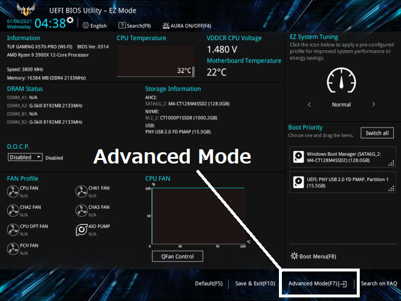 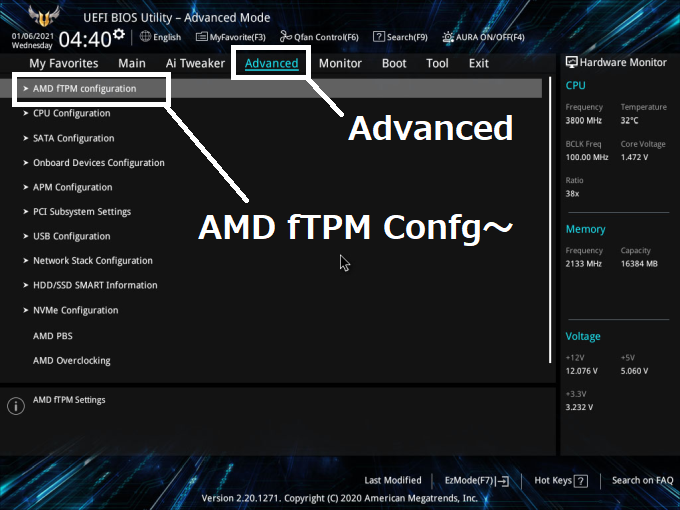
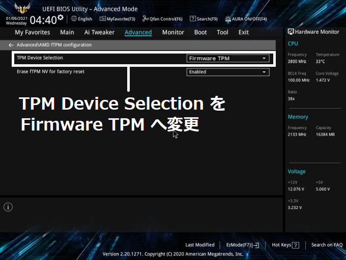
5.セキュアブートの有効化
画面上部の Boot(起動) タブを開き、上から三番目の SecureBoot
メニューに入り、OS Type を選択します。選択肢が表示されるので
Windows UEFI Mode に変更します。
・Boot→SecureBoot→OS Type→Windows UEFI
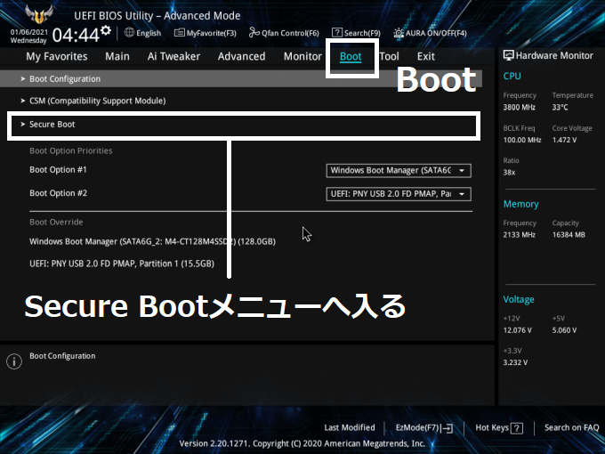
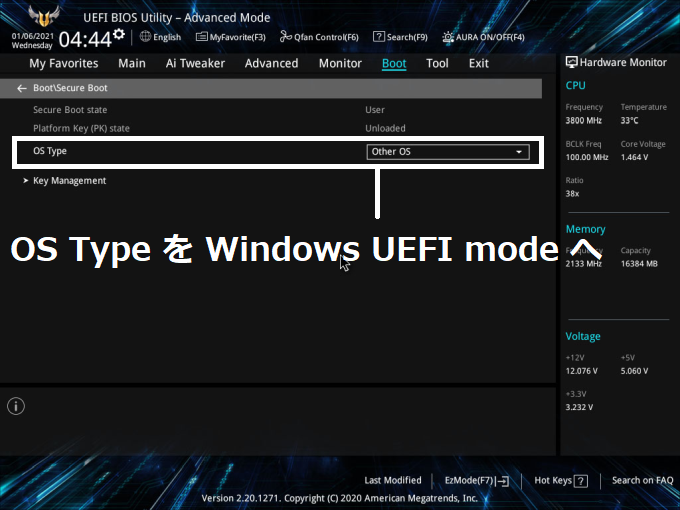
6.設定の保存
画面上部にある Exit タブを開くと、上から二番目に Save Change～
(保存して再起動)が表示されるので、選択します。ポップアップで
選択肢が表示されるのでOKを選んで設定を保存し再起動します。
設定を保存せずに終了するには Discard Change & Exit にします。
・Exit→Save Change & Reset→OK
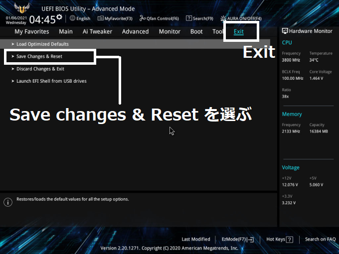
7.動作確認
Windowsが起動したら、Valorantでエラーが出ないか確認します。
エラーが引き続き出る場合は、Windows11対応のファームウエアへ
更新が必要になる場合があります。
※トラブルシューティング
windows11のローディングに失敗するようになった場合は、
手順 5(Other OS)を戻してみてください。
キーボードのDELキーを押し続けながらPCの電源を入れると
ファームウェア画面へ戻れます。
ASRock
表示言語が日本語の場合もありますが、大体英語のカタカナ読みです。
※キーボードの矢印キーとEnter(決定)、ESC(戻る)でも操作できます。
※機種により表記や色が異なる事があります。
4.ファームウェアの設定(fTPM)
まず Advanced Mode(詳細モード) の項目がある機種は選択します。
無い機種はそのまま Advanced(詳細) タブを開いて下さい。一番上の
CPU Config～ メニューに入り、画面下側の AMD fTPM Switchを選択
すると、選択肢が表示されるので AMD CPU fTPM に変更します。
その項目が無い場合は Enabled(有効)にします。
・Advanced→CPU Config→fTPM (有効)
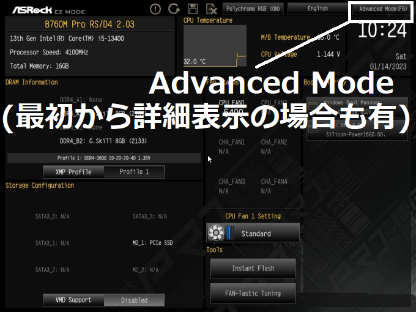 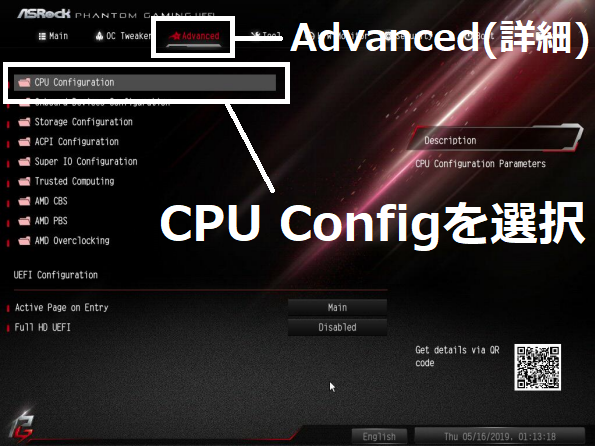
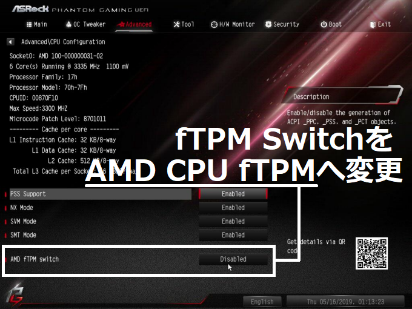
5.起動設定(CSM)
最上段の Boot タブを開き、画面下のCSM～(互換サポートモジュール)
メニューに入ります。メニュー 一番上のCSMを選択すると、選択肢が
表示されるので、Disabled(無効)にします。
・Boot→CSM(互換サポートモジュール)→CSM 無効
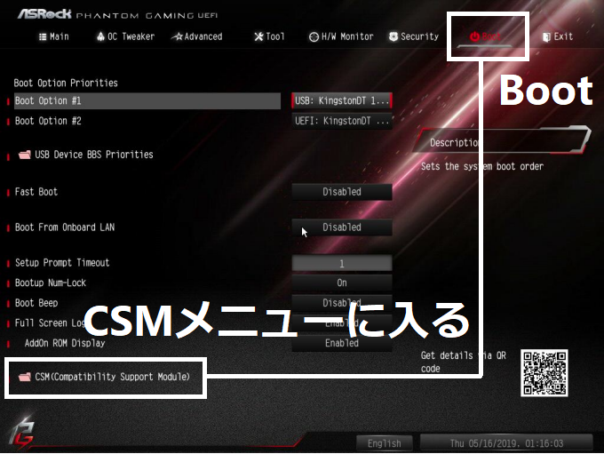 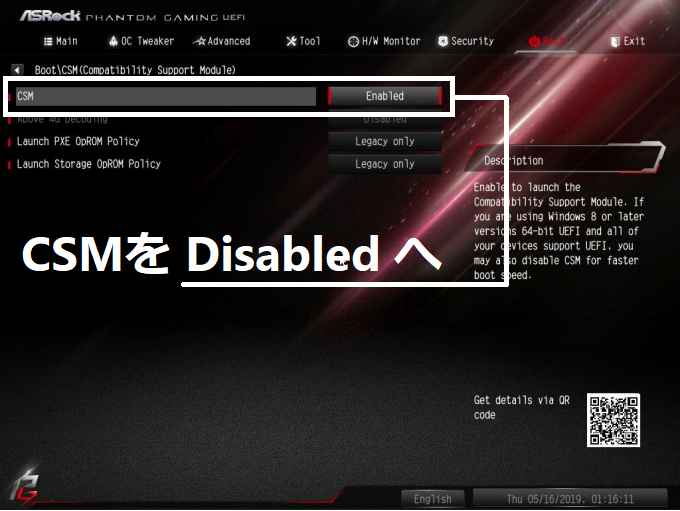
6.セキュアブートモードの設定
最上段の Security タブを開き、SecureBootメニューに入ります。
Secure Boot の項目をいったんDisabled(無効)にします。
Secure Boot Mode を選択すると、選択肢が表示されるので、
Standard(標準) にします。
・Security→Secure Boot→Secure Boot 無効
・Security→Secure Boot→Secure Boot Mode→Standard 標準
・Security→Secure Boot→Secure Boot 有効
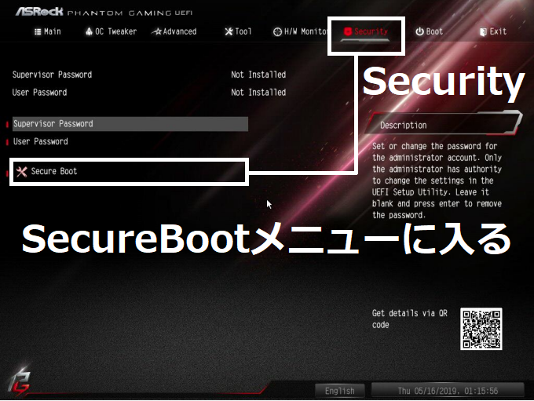 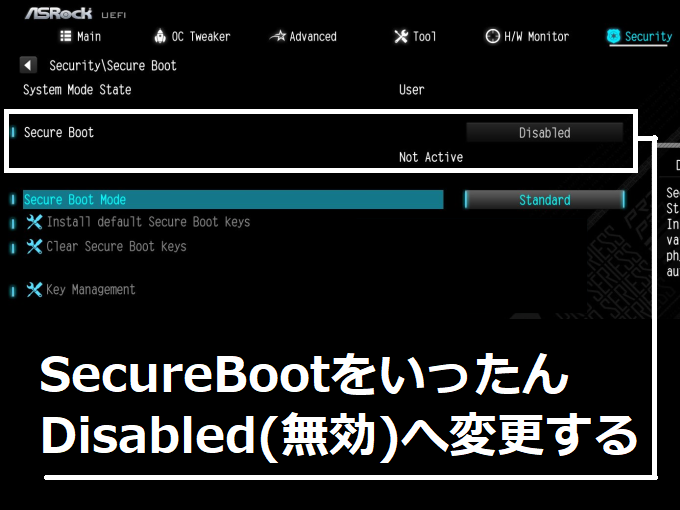
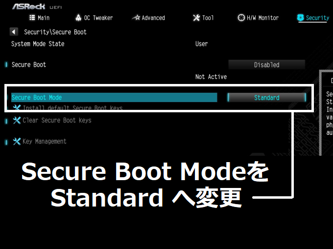
7.セキュアブートの有効化
Secure Boot の項目を Enabled(有効)にします。
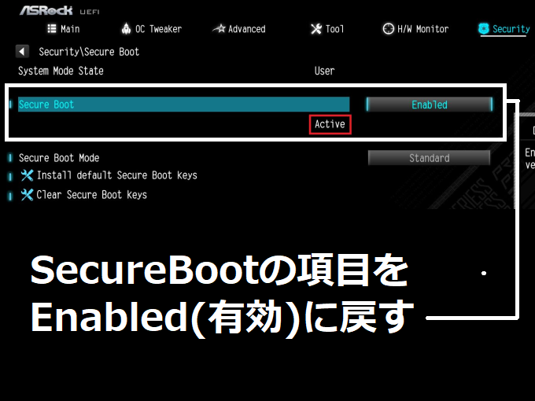
8.設定の保存
最上段の Exit タブを開きます。Save Change and Exit を選択すると、
選択肢が出るのでYESにして設定を保存し再起動します。
保存せずに終了するには Discard Change and Exit にします。
・Exit→Save Change and Exit
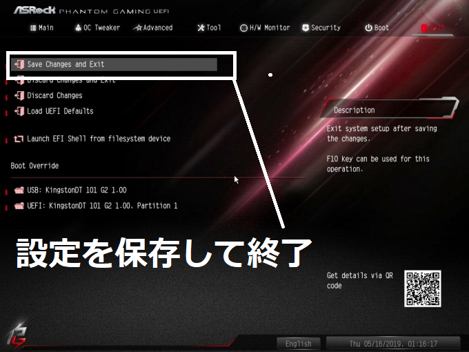
9.動作確認
Windowsが起動したら、Valorantでエラーが出ないか確認します。
エラーが引き続き出る場合は、
公式の手順か
こちらの手順を試してみてください。
windows11のローディングに失敗するようになった場合は、
手順5と6をCSM有効、SecureBoot無効に戻してみてください。
キーボードのDELキーを押し続けながらPCの電源を入れると
ファームウェア画面へ戻れます。
AORUS (Gigabyte)
項目の場所や表記が機種によってバラバラなうえ、手順が複雑で
難易度が高く、全てのステップを正確に書けてるかは怪しいので、
設定変更はおすすめしません。
※ファームウェアの更新をすれば難易度は下がると思われますが、
BTOなどでは Windows の認証キーがファームウェアに含まれている
場合が有り、BTOメーカー以外のファームウェアを書き込むと、キー
情報が消えてOSの認証が外れる事があるのでご注意ください。
※言語が日本語の場合もありますが、大体英語のカタカナ読みです。
※キーボードの矢印キーとEnter(決定)、ESC(戻る)でも操作できます。
※機種により表記や色が異なる事があります。
4.ファームウェアの設定(fTPM)
まず画面右側のAdvanced Mode(詳細モード) を選択します。画面上部
にある Settings を選択し、AMD CPU fTPM を Enabled(有効) にします。
※Settings - Miscellaneous サブメニューの中に有る機種もあります。
※Settings が Peripherals 表記の場合も有ります。
・Settings→AMD CPU fTPM 有効
※Settings→Miscellaneous→AMD CPU fTPM の場合もあり
※fTPMの項目がどこかに有るから探す
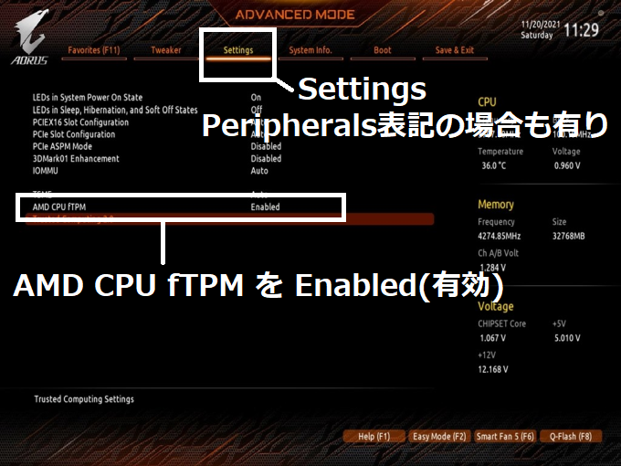
5.起動設定(CSM)
最上段の Boot タブを開き、画面中段のCSM Support(互換サポート～)
を選択すると、選択肢が表示されるので Disabled(無効)にします。
・Boot→CSM Support 無効
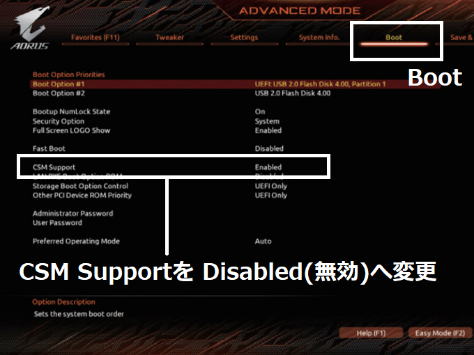
最上段の Save & Exit を選択し、Save & Exit Setup を選択後 YESを
押すと再起動するので、画面が暗転したらキーボードの DELキー を
押し続けて再びファームウェア画面へ戻ります。
※Windowsが起動した場合は、手順1～3でファームウェアメニューへ
・Save & Exit→Save & Exit Setup
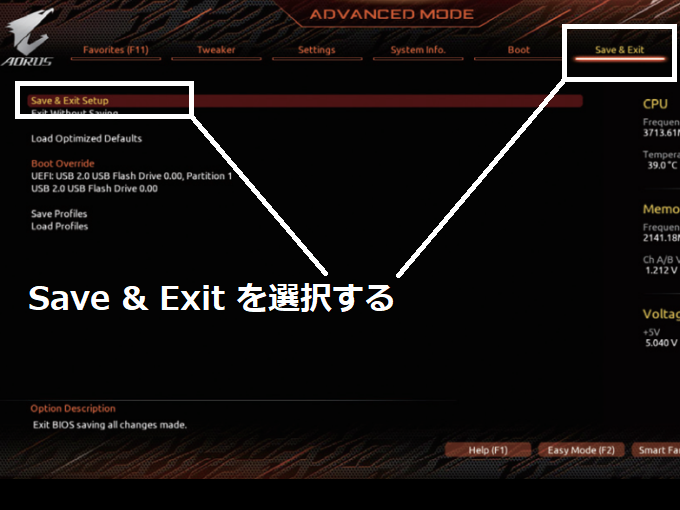
6.セキュアブートモードの設定
最上段の Boot を選択し、SecureBootメニューに入ります。
Secure Boot Mode の項目をいったん Customにします。
次に RestoreFactory Keys を選択すると、選択肢が出るので YESを
選択します。もう一度選択肢が出るので、YESを選択して再起動します。
画面が暗転したらキーボードのDELキーを押し続けて再びファーム
ウェア画面へ戻ります。
※Windowsが起動した場合は、手順1～3でファームウェアメニューへ
・Boot→Secure Boot→Secure Boot Mode→Custom
・Boot→Secure Boot→RestoreFactory Keys
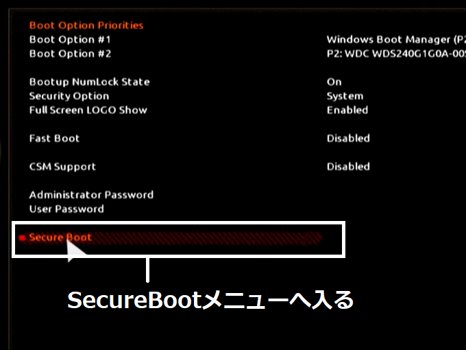 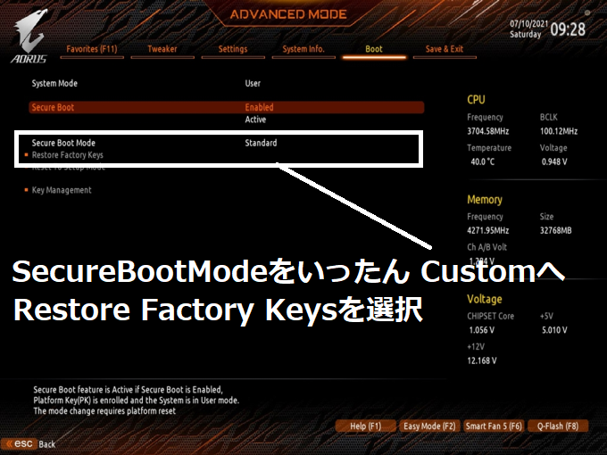
7.セキュアブートの有効化
最上段の Boot を選択し、再びSecureBootメニューに入ります。
SecureBootの項目がEnabled(有効)にし、Activeになっていたら、
SecureBootModeをStandardへ戻します。
・Boot→Secure Boot→Secure Boot 有効
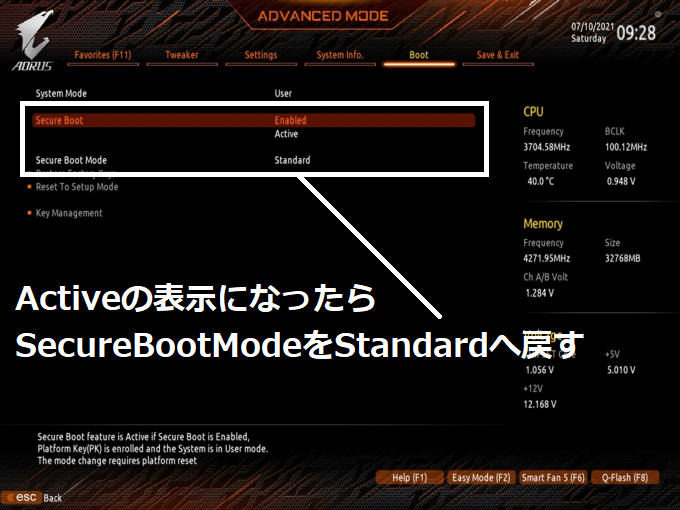
8.設定の保存
最上段の Save & Exit を選択し、Save & Exit Setup を選択後 YES
を押して設定を保存します。
・Save & Exit→Save & Exit Setup
9.動作確認
※トラブルシューティング
windows11のローディングに失敗するようになった場合は、
手順5と7をCSM有効、SecureBoot無効に戻してみてください。
キーボードのDELキーを押し続けながらPCの電源を入れると
ファームウェア画面へ戻れます。
MSI
言語が日本語の場合もありますが、大体英語のカタカナ読みです。
※キーボードの矢印キーとEnter(決定)、ESC(戻る)でも操作できます。
※機種により表記や色が異なる事があります。
4.ファームウェアの設定(fTPM)
まず画面上部のAdvanced Mode(詳細モード) を選択します。画面左側
にある SETTINGS タブを開きます。Security メニューに入り
Trusted Computing の項目に進みます。
Security Device Support を選択すると、選択肢が出るので Enable
(有効)にします。その下の AMD fTPM Switch が AMD CPU fTPM に
なっている事を確認します。
・SETTINGS→Security→Trusted Computing→Security Device Support 有効
・SETTINGS→Security→Trusted Computing→AMD fTPM Switch→AMD CPU fTPM
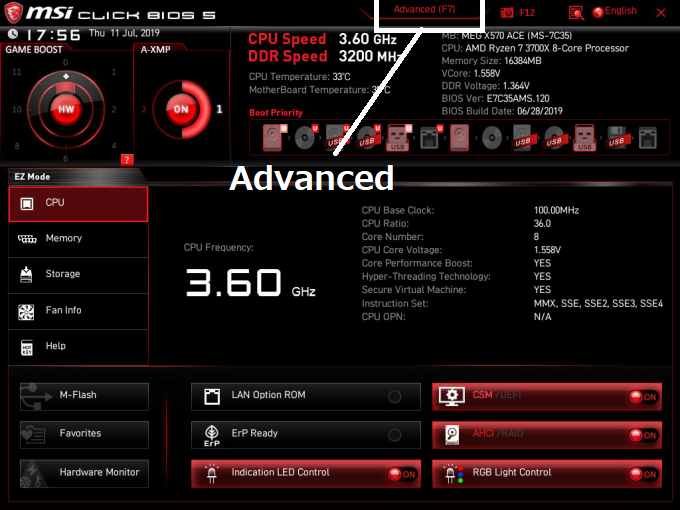 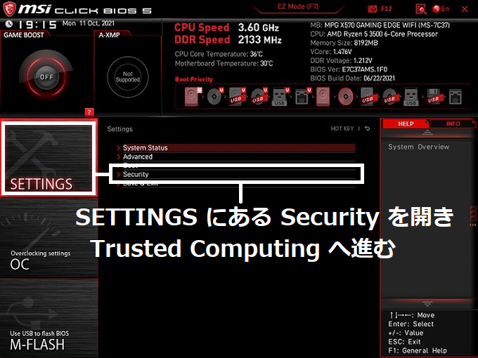
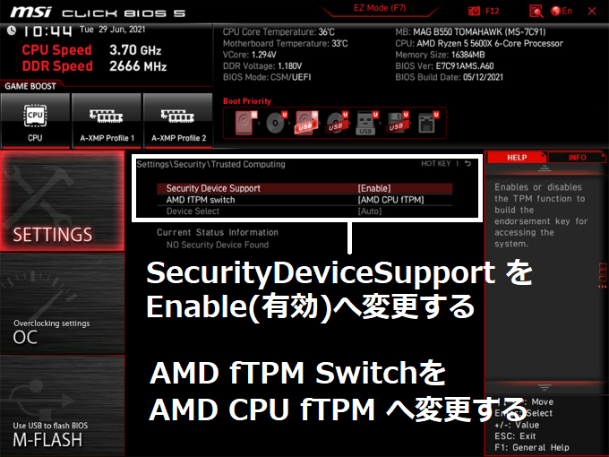
5.起動設定(CSM)
画面左のSETTINGS から、Advanced(拡張項目)メニューに入ります。
中央下の Windows OS Config～ へ進み、
BIOS UEFI/CSM Mode を UEFI にします。
・SETTINGS→Advanced→Windows OS Config→UEFI/CSM→UEFI
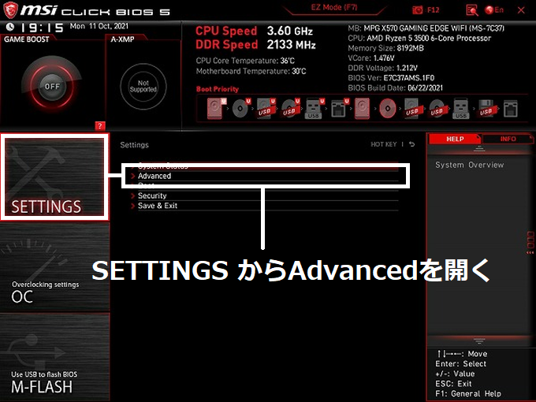 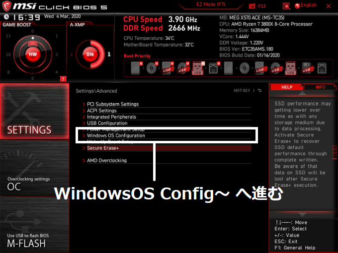
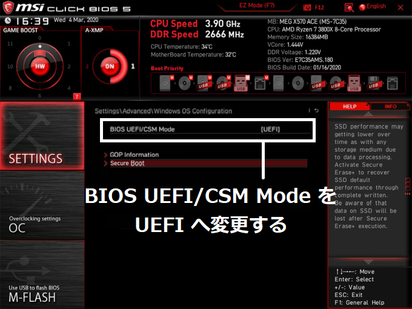
6.セキュアブートの有効化
一番下の SecureBoot メニューに入ります。
Secure Boot Mode を選択、選択肢は Standard にします。
Secure Boot の項目を選択、選択肢は Enabled(有効)にします。
エラーが表示された場合は、Enroll All Factory Default Keys を
ロードしてみてください。
・SETTINGS→Advanced→Win OS Config→Secure Boot→Secure Boot Mode→Standard
・SETTINGS→Advanced→Win OS Config→Secure Boot→Secure Boot 有効
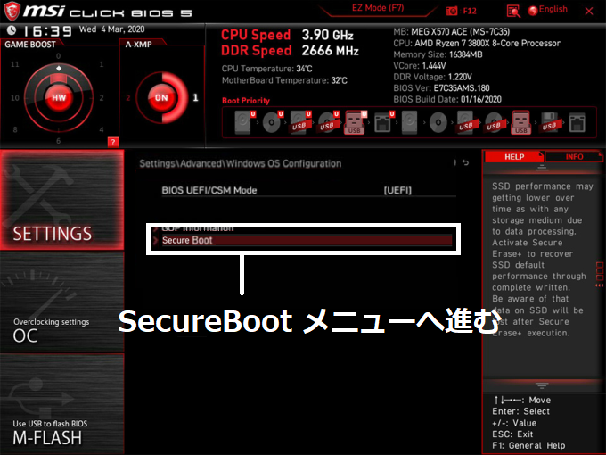 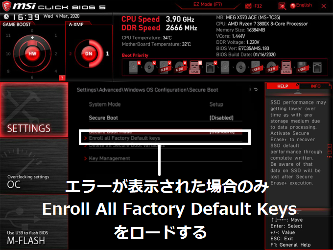
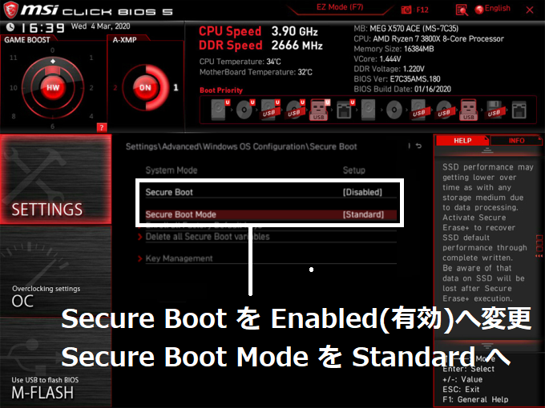
7.設定の保存
画面左のSETTINGS から、一番下の Save & Exit(保存と終了)メニュー
に入ります。Save Changes and Reboot(保存して再起動)を選択して
設定を保存します。
設定を保存せずに終了するには Discard Changes and Exit にします。
・SETTINGS→Save & Exit→Save Changes and Reboot
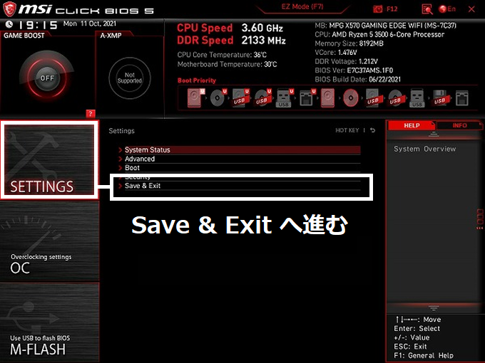
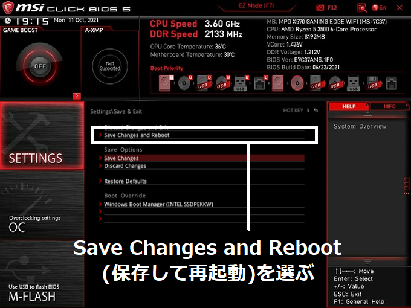
8.動作確認
※トラブルシューティング
windows11のローディングに失敗するようになった場合は、
手順5と6をCSMをCSM、SecureBoot無効に戻してみてください。
キーボードのDELキーを押し続けながらPCの電源を入れると
ファームウェア画面へ戻れます。
起動しなくなった時は
CSM を無効にすると、グラボを起動時に見失う場合や、
古い構成のSSDを見失ってwindowsのロードに失敗する事
があります。
・画面は映るがエラーでWindowsが起動しない
SSDのCドライブやDドライブの構成が古いため起こります。
SecureBootをDisabled(無効)、CSMをEnabled(有効)に戻します。
・画面が映らない、エラー音(ﾋﾟｰﾋﾟｰﾋﾟｰﾋﾟｰ)などが鳴る
グラボのファームウエアが古いため起こります。
HDMIケーブルのみを接続しても何も映らない場合は
PC本体のコンセントを抜き、側面パネルを取り外し
マザボ上のボタン電池を取り外してください。
15分ほど放置したのち、ボタン電池を取り付け
側面パネルを戻しコンセントを接続して電源を入れます。
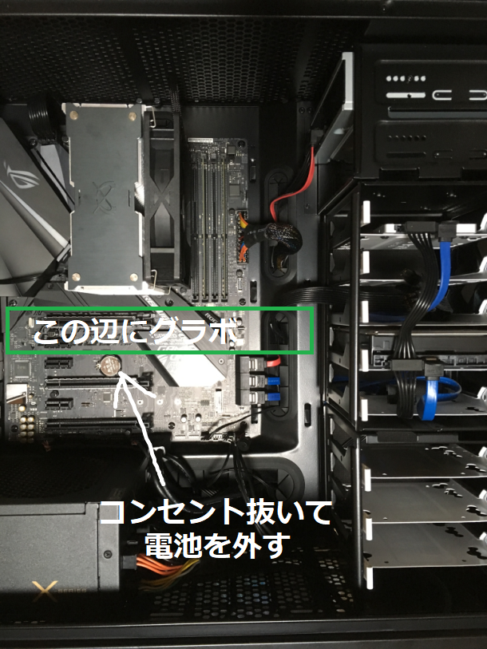
なんだかんだAsusのファーム(BIOS)はよく出来てると思った。
ちゃんと詰まないようにできてる。逆にGIGAは俺でも解らん…